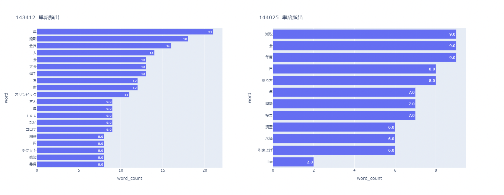
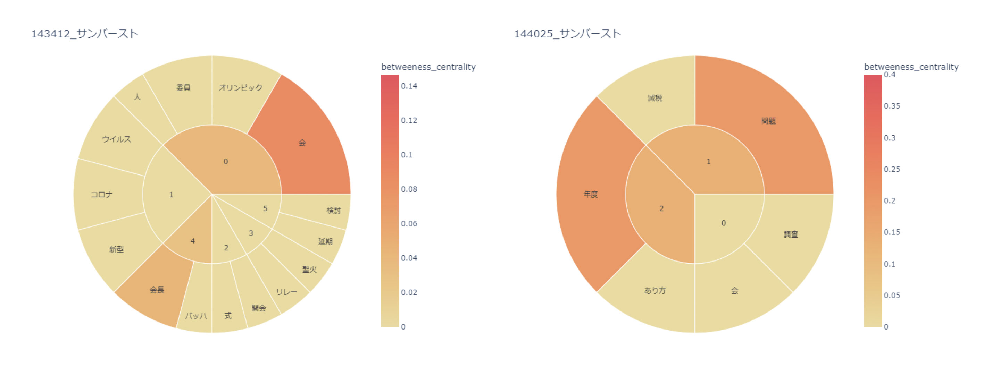

データサイエンス テキストマイニング
1964/2021
1964年と2021年の東京オリンピックに関連する記事をもとに単語から棒グラフと円グラフを用いて
当時の出来事を読み解いていく。まずそれぞれの字を打ち込んでデータとして読み込ます。そこから多く表示されたものをもとに考える。

2021年は最近なため出てきている単語の背景が想像しやすい。上から年、延期、会長となっているが、2020年に開催されるはずだったものがIOCの会長によって延期が提起され難しい年になった。1964年は減税、会、年度が上がっている。会は2021年の5位にも入っている。

サンバーストの割合で二つの棒グラフにおける単語の頻出を比較すると2021年は会は会長に加えてロコな関連のキーワードが見受けられる。1964年では問題、年度に続いて減税など見られる。それそれの年にさまざまな問題がある。
どちらもオリンピックに関した単語があることはもちろんであるk￥がそれ関連した問題や、社会問題についての単語も多く上がっていることがわかった。また、違いについては減税とコロナである。新型コロナウイルスによって延期されたことが2021年の大きな出来事であったと思う。